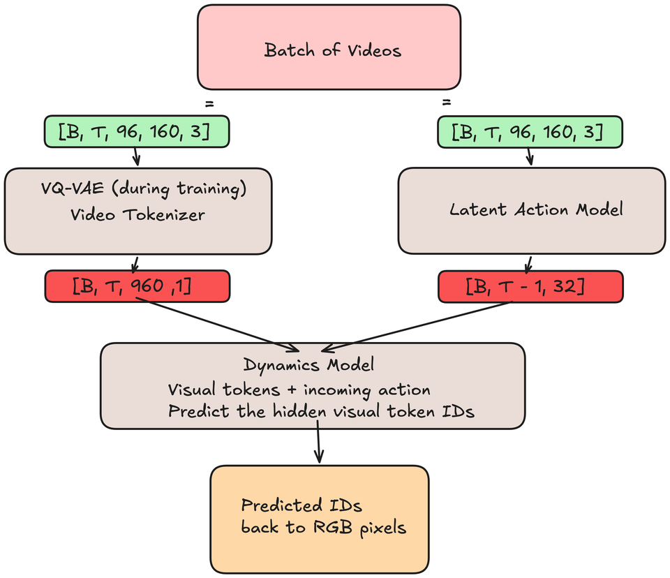

GENIE
Recreating a world model for Doom
Introduction
The generation of interactive scenes is insanely cool. From Etched and Decart’s Oasis to General Intuition’s MIRA, the use of world models as playable environments is fascinating. Because of our everlasting curiosity, we (Kuan and Nathan) recreated Google’s Genie 1 paper specifically to run Doom on Google’s Fly connectome.
Goal
generating doom frames on the fly (no pun intended)
Given recent frames and a player action, the world model predicts what the player sees next, making the generated Doom scene playable.
Context on Genie
Genie showed that large-scale unsupervised learning from unlabelled video could produce action-controllable environments. Through the use of platformer game data, DeepMind researchers created a world model which could turn image prompts into playable scenes, without ground-truth action labels. Text prompts could first be turned into images using a separate text-to-image model.
Peak signal-to-noise ratio (PSNR) measures how close the predicted image is to the real image via mean squared error, in decibels (dB). Genie uses the change in PSNR between LAM-selected and random actions to measure controllability; reconstruction PSNR alone does not prove that a world is controllable.[1]
Genie has three main components: a latent action model, a video tokenizer, and a dynamics model. Together they enable action-controllable video generation without action labels.
Differences between our implementation and the original Genie
- 8 ST-transformer blocks in our smaller dynamics model versus 48 for Genie.
- Hyperparameter differences (compute gap).
- Genie had about 1.1 billion frames; we used 144,000 for the LAM and dynamics, with a larger 600,000-frame corpus for the tokenizer.
- Data is only one specific game relative to their multi-platformer dataset.
- We train the LAM separately and freeze it for dynamics training; the paper co-trains LAM and dynamics.
| Model | Ours | Genie | Ratio |
|---|---|---|---|
| Tokenizer | 388.0M | 200M | 1.9× bigger |
| LAM | 68.6M | 300M | 4.4× smaller |
| Dynamics | 35.2M | 10.1B | 287× smaller |
| Total | 491.8M | 10.7B | 22× smaller |
High-level summary
- The video tokenizer (VQ-VAE) turns video frames into discrete visual token IDs for the dynamics model.
- The latent action model (LAM) infers an action code for each transition between observed frames.
- The dynamics model learns to predict hidden visual token IDs from earlier visual IDs and the incoming LAM action vector.
Dataset
We used Pdoom’s Doom dataset. The dataset consists of about 10 million frames, roughly 700 shards, with each shard holding 100 videos. We trained our Genie implementation on 42 shards worth of data (4,200 videos). Each image was 80 × 60 pixels. We resized the frames to 90 × 160 and padded the bottom to 96 × 160, matching the model’s input dimensions.
The Doom dataset was a supervised dataset with labeled data, but our implementation did not use the action labels for training. However, the frame order helped us align each action with its transition. In the dataset, the consecutive frames barely differ from one another. Therefore, when training the LAM, we sampled every fourth frame so transitions contain more visible motion.
How training connects the models
We train the tokenizer to reconstruct frames, then train the LAM to infer action codes from frame transitions. During dynamics training, both trained models read the same real clip: the frozen tokenizer gives us 960 visual token IDs per frame, while the frozen LAM gives us one 32-number action vector between frames. The dynamics model learns to fill in hidden visual IDs using earlier visual IDs and the incoming action.

Two vocabularies, not one: the tokenizer has 1,024 visual codebook entries; the LAM has 8 action codebook entries. Each entry stores a 32-number vector, but the two codebooks are separate.
Video tokenizer (VQ-VAE)
Our video tokenizer is a vector-quantized variational autoencoder (VQ-VAE). It has an encoder, a decoder, and a learned codebook between them.
Quantization selects an entry from that codebook for each token position. The entries are learned representative feature vectors from training video.
Open the complete VQ-VAE drawing
Input preparation
A batch contains B clips of T frames each.
Each frame is 96 by 160 pixels with three RGB channels.
The tensor at this point is [B, T, 96, 160, 3].

Patchification
Patchification prepares the video data for the transformer. Each frame is broken into chunks of 4 × 4. A 96 × 160 image thus becomes a 24 × 40 grid of patches, across 3 channels. Flattening each 4 × 4 × 3 patch gives us 960 patches of 48 pixel values per frame. Until now, no image values have been modified.
A linear layer projects the 48 pixel values at each of the 960 patch positions into 512 features. We call that learned vector a token; its position still corresponds to the original patch.
Self-attention without positional information is permutation-equivariant: reordering the tokens reorders the outputs. Thus, every token vector must encode its spatial position. In the case of a spatiotemporal transformer, it must also encode its temporal position.
The same patch position in every frame gets the same learned 512-dimensional spatial position vector added to its token.
All tokens in one frame get the same learned 512-dimensional temporal position vector added to them.
Those positional encodings are fully trainable.
The learned positions identify each token’s original place and frame; the transformer builds contextual features from those positioned tokens.

Chained transformer blocks: the encoder
The positioned tokens pass through 12 spatiotemporal transformer blocks, which share information across positions and time.
A transformer outputs a tensor the same shape as its input. Thus the ease of being chained together.
Each output token contains context from its frame and earlier frames at the same patch position.

Quantization
Quantization selects entries from the tokenizer’s learned visual
codebook.
After twelve transformer blocks, each token in the
[B, T, 960, 512] tensor contains more than its
original patch: it has gathered information from other positions and
earlier frames.
[B, T, 960, 512] is then projected down to
[B, T, 960, 32].
With an untrained encoder, [B, T, 960, 32] has no
useful learned meaning. With a trained encoder and codebook, each
32-number vector is assigned one integer visual token ID.
If the feature vector at patch position 456 is closest to entry
278 in the codebook, its visual token ID is 278. The full tensor of IDs
has shape [B, T, 960]; looking those IDs up retrieves
vectors of shape [B, T, 960, 32].
Lcommitment moves encoder features toward their selected codebook vectors; Lcodebook moves those selected vectors toward the encoder features.

What the visual codebook stores
Think of the codebook as 1,024 learned rows, each holding 32 numbers. The encoder produces one 32-number vector for each of the 960 positions in a frame. It compares that vector with every row and selects the nearest one by squared Euclidean distance. The row number is the visual token ID; the row itself is the vector the decoder receives.
[B, T, 960, 32]Continuous encoder features: one 32-number vector per position.[1,024, 32]The learned codebook: 1,024 candidate vectors, each 32 numbers long.[B, T, 960]Nearest-row lookup replaces each vector with one integer ID.[B, T, 960, 32]Looking up those IDs retrieves the selected vectors for decoding.
A token ID is an address, not a pixel value or a 32-number vector. The 1,024 visual IDs are separate from the LAM’s eight action IDs; dynamics predicts only visual IDs.
Two losses make this lookup learnable. The codebook loss moves selected rows toward the encoder features; the commitment loss encourages encoder features to stay near their selected rows. Reconstruction loss trains the decoder and reaches the encoder through a straight-through gradient. The codebook does not acquire human labels such as “wall” or “weapon.”
Chained transformer blocks: the decoder
The tokenizer decoder uses the same type of blocks as its encoder, but operates at a feature width of 1,024 instead of 512, with 20 blocks rather than 12. We account for this flexibility in our implementation of the SpatioTemporalTransformer.
After the decoder blocks, normalization and a linear pixel head
produce a tensor of size [B, T, 960, 48], ready to be
reshaped into a video with corresponding size as the raw frames at
the very beginning of this article.

Reconstruction
Reconstruction turns the flattened
[B, T, 960, 48] into recognizable video.
Reconstruction loss propagates through the decoder as well as the
encoder, using a straight-through gradient across quantization.

Now is the right time to break down the long-awaited spatiotemporal (ST) transformer.
Spatiotemporal transformer
Open the complete ST-transformer drawing
Input preparation
We’ve already presented the input to the transformer in the
tokenizer encoder: [B, T, 960, 512] holds one
positioned token at each of the 960 patch positions per frame.
Before the first block, those tokens have not yet shared context.

Spatial attention: setting up Q, K, V vectors
Q, K and V tensors are three learned projections of the main
[B, T, 960, 512] tensor. Each projects from dimension
512 to 512 along the last axis.
Q and K vectors determine how strongly token positions attend to one another. V vectors carry learned features to be mixed using those attention weights.
For every frame, Q, K, V each contain 960 token vectors of dimension 512. They are reshaped into 8 attention heads by splitting the feature dimension: channels 0 to 63 go to head 1, channels 64 to 127 go to head 2, etc. Every head still sees all 960 tokens.
Spatial attention lets tokens within the same frame attend to one another. Their vectors change as they gather context, but each token keeps its patch position in the grid.

Spatial attention-logit matrix
The attention matrix depends on the input tokens and on the learned weights that produce Q and K (Wq and Wk).
It is easier to understand its mechanism by analyzing a fully trained model:
- A fully trained model can assign high attention weight to token positions that help one another. For the tokenizer, this may reflect learned spatial relationships, but an attention map alone does not establish semantics or causality.
- Scaled Q–K dot products are normalized with softmax. Multiplying these attention weights by V produces a weighted mixture of value vectors, which is projected back into the residual stream.
The above explanation assumes one attention head. The tokenizer encoder uses eight, each with its own learned Q, K, and V projections. They can learn different patterns of attention, but we cannot assign a fixed meaning to a head without examining it.
A linear output projection combines the output of all 8 attention heads and prepares that tensor to the right size to pass through the next part of the transformer block.
The idea is that every token now has some spatial context of the other tokens.

Residual spatial attention connection
A residual connection adds the attention update back to the input:
x ← x + attention(LayerNorm(x)). It preserves a
direct path for the existing representation and its gradients; it
does not guarantee that updates are small.
Temporal attention: setting up Q, K, V vectors
Temporal attention groups tokens by patch position, so each position attends to the same position across frames. Spatial attention has already mixed information within each frame.
The rest of the attention mechanism remains identical to spatial attention, with a causal mask preventing a frame from attending to its future.

Temporal attention-logit matrix
Same idea, different axis. For each patch position and each
head, Q and K now produce a [T, T] attention matrix
rather than [960, 960]. The causal mask hides future
frames before softmax. Multiplying those weights by V lets a token
gather information from the same patch position in the current and
earlier frames.

Residual temporal attention connection
As with spatial attention, the temporal attention update is added back to the input.
Feed-forward neural network
The feed-forward neural network consolidates acquired features through the spatial and temporal attention blocks.
For each token independently, it expands 512 features to 2048,
applies GELU, and projects back to 512. One last residual addition
completes the block. The shape stays
[B, T, 960, 512], ready for the next block.

The three residual connections


Latent action model
The latent action model (LAM) has an encoder, an action codebook, and a decoder. During training, it learns a vocabulary of eight action codes from changes between observed video frames, without action labels.
LAM encoder
Follow a training batch of four 16-frame clips through the encoder:
[4, 16, 96, 160, 3]Input clips: [B=4, T=16, 96, 160, 3], exactly like the tokenizer.[4, 16, 60, 768]Split each frame into 60 larger patches and flatten each patch to 768 pixel values.[4, 16, 60, 512]768 → 512 over the last dimension. Linear layer.[4, 16, 60, 512]Add learned spatial-temporal positions. Same idea as tokenizer.[4, 16, 60, 512]Pass through 8 ST-transformer blocks in the smaller configuration described here. Each frame can see itself and the frames before it. Same idea as tokenizer.[4, 16, 512]Average over the 60 patches to describe each frame with one vector.[4, 16, 32]Go through another linear layer to produce 32 continuous features per encoded position.[4, 15, 32]Drop the first encoded position: 16 frames contain only 15 transitions.[4, 15]Compute distances to the eight action codebook vectors and take anargminto select one action ID per transition.
See below for codebook explanation.[4, 15, 32]Look up each ID to get its learned action vector for the decoder and dynamics model.
We drop the first encoded position, not the first input frame. The 32 numbers are continuous features; the selected ID is one integer from 0 to 7.
This is the base, mean-pooled LAM architecture described in the draft. The repo also contains experimental encoders that preserve spatial differences; the checkpoint configuration selects the actual variant.
Original LAM encoder drawing

[T, B, …]. The implementation and corrected text
use [B, T, …]. “Drop initial frame” means discard
the first encoded position, not its input pixels.
What the action codebook stores
The LAM codebook has eight learned rows, each a 32-number vector. For every transition, the encoder produces a continuous vector; squared Euclidean distance picks the closest row. During LAM training, the LAM decoder receives that vector. During dynamics training, the frozen LAM supplies it to the dynamics model.
Its index is an action ID from 0 to 7; its value is a 32-number action vector.
[B, T−1, 32]Continuous features describe the change between neighboring frames.[8, 32]Codebook: the action codebook stores eight learned candidate vectors for the nearest-row comparison.
(not a transformation)[B, T−1]Nearest-row selection chooses one action ID for each transition.[B, T−1, 32]Looking up each ID returns its selected action vector for prediction.
An action code does not start out meaning “left” or “fire.” Its meaning emerges from which observed transitions select it. We inspect those meanings after training.
As in the visual codebook, codebook loss moves selected rows toward encoder features, commitment loss keeps the encoder near its selections, and reconstruction loss rewards useful choices. The experimental LAM quantizer also includes code-use repairs; the checkpoint configuration determines which variant is used.
LAM decoder
During LAM training, its decoder takes previous frames and selected action vectors, then predicts their next frames:
[4, 15, 96, 160, 3]Condition on the first 15 frames of each 16-frame clip.[4, 15, 60, 768]Apply the same patching as the encoder.[4, 15, 60, 512]Project the patches with a linear layer.[4, 15, 60, 512]Add learned spatial and temporal positions.[4, 15, 1, 512]Project each selected action vector from 32 to 512 dimensions, then add a singleton patch axis.[4, 15, 60, 512]Add that action to every patch of its corresponding conditioning frame.[4, 15, 60, 512]Pass the result through 8 ST-transformer blocks.[4, 15, 60, 768]Use another linear layer to predict pixel values for each patch.[4, 15, 60, 768]Apply sigmoid to bound the pixel values between 0 and 1.[4, 15, 96, 160, 3]Unpatch the predictions into future frames, ready to compare with the 15 shifted targets.
Original LAM decoder drawing

LAM training
We improve the model with a quantization loss between the encoder features and the selected codebook vectors, plus a reconstruction loss between the predicted frames and the actual next frames. These use mean squared error; the quantization objective includes separate codebook and commitment terms. Reconstruction compares all 15 predicted frames against the shifted targets, not just the last frame.
Original LAM training graph

Dynamics model
The dynamics model is the final model we train. It learns to predict visual token IDs using the frozen video tokenizer and LAM outputs from real clips.
Training inputs and masking
Follow a 16-frame clip through the smaller dynamics model:
[B, 16, 960]Input the tokenizer’s visual token IDs, each with 1,024 possible values.[B, 16, 960]At positions to predict, swap the real ID for 1024, the extra MASK input symbol.[B, 16, 960, 512]Embed the visible IDs and MASK symbols into 512-length vectors.[B, 15, 32]Input the LAM’s selected codebook vectors: one action for each transition.[B, 15, 512]Apply a linear layer to project each action vector to the dynamics width.[B, 16, 1, 512]Pad the frame axis with a zero action for frame 0, then add a singleton patch axis.[B, 16, 960, 512]Add one projected action to all 960 patches of its destination frame.[B, 16, 960, 512]Add spatial and temporal positions.[B, 16, 960, 512]Pass the combined tensor through 8 ST-transformer blocks.[B, 16, 960, 512]Apply layer normalization.[B, 16, 960, 1,024]A linear output head creates logits over the 1,024 visual codebook IDs at each patch position.
Frame 0 has no incoming action. MASK is an input symbol, not an image code the model can predict: its output choices are IDs 0–1023.
Training the dynamics model
We take a real 16-frame clip, encode it with the frozen video tokenizer, and get its action vectors from the frozen LAM. For each clip, we sample a token-hiding probability between 50% and 100% and hide positions at random. Frame 0 is never hidden, so the model always has an initial visible frame.
[B, 16, 960]Save the tokenizer’s real IDs as targets, and make a mask of the positions to hide.[B, 16, 960]Swap only hidden input IDs for 1024, so the model genuinely cannot see their answers.[B, 16, 960, 1,024]Predict scores for all 1,024 visual IDs at every position.scalarCompute cross-entropy against the real IDs only at hidden positions; update only dynamics-model weights.
Scoring visible positions would teach the model to copy its own input. Masking forces it to fill gaps from visible patches, earlier frames, and the incoming action.
Play time (inference)
Training gave us two separate codebooks and a dynamics model that can fill hidden visual IDs. To play, we start with a short prompt from a real Doom clip. Our demo uses four frames. The frozen tokenizer encodes those prompt frames into visual token IDs, and the frozen LAM infers the action vectors between them. That prepares the context; it does not reveal any future frame.
From there, our key press picks an action ID instead of asking the LAM encoder to infer one. We look up that ID in the LAM’s eight-entry action codebook to get its 32-number vector. The dynamics model receives the earlier visual IDs and this incoming action, with all 960 positions of the new frame hidden.
A key chooses a learned action code, not a ground-truth Doom action label. In this checkpoint the codes mostly separate camera turns from no-turn codes. The demo maps A and D to turns, W and S to no-turn codes, and combinations to milder turns; that mapping is chosen after training.
Our generation settings use three MaskGIT passes per frame, compared with 25 in the Genie paper. The single-player demo starts with these shapes:
[1, 4, 96, 160, 3]Start with four real prompt frames.[1, 4, 960]Encode those frames with the frozen tokenizer to get visual IDs.[1, 3, 32]Use the frozen LAM to infer action vectors for the three observed transitions.[1]Map the next key press to one learned action ID.[1, 32]Look up that ID in the LAM action codebook for the incoming transition.[1, 960]Append a fully masked visual-ID frame to the context.
Generating the next frame with MaskGIT
Instead of choosing the highest-scoring ID once, we sample candidates and refine them across three dynamics-model passes. Each pass keeps the most confident predictions and re-masks the least confident remaining positions.
[B, 960]Start the new frame with all visual positions hidden (B = 1 for the demo).[B, 960, 1,024]Run dynamics with the selected action vector to score all visual IDs at each hidden position.[B, 960]Sample candidate IDs, keep the most confident, and re-mask the rest.[B, 960]Repeat for three passes; the cosine schedule leaves roughly 129 fixed after pass 1, 480 after pass 2, and all 960 after pass 3.[B, 960, 32]Look the final IDs up in the tokenizer’s visual codebook.[B, 96, 160, 3]Pass those vectors to the tokenizer decoder to compute a future frame.
The generated visual IDs become context for the next key press. We do not need to re-encode the generated image. The model keeps a finite context window; when that window fills, the demo restarts its cache from the most recent frames.

Results
The archived tokenizer evaluation reached 37.43 dB PSNR on 256 held-out test clips, using 197 of its 1,024 codes. The final exported checkpoint later recorded 40.33 dB on four fixed validation clips, using 201 codes. These are different checkpoints and evaluation sets, so we keep them separate rather than summarizing them as the draft’s roughly 42 dB.[5]
| Checkpoint | Evaluation | PSNR | Codes used |
|---|---|---|---|
| Step 5,500 | 256 test clips | 32.43 dB | 177 / 1,024 |
| Step 36,000 | Same test clips | 37.43 dB | 197 / 1,024 |
| Step 38,500 | Same test clips | 37.04 dB | 198 / 1,024 |
| Step 94,500 | 4 fixed validation clips | 40.33 dB | 201 / 1,024 |
Latent actions
The LAM measurements below come from the evaluation history stored inside the checkpoint itself, recorded on a fixed validation set at the end of each of its twelve epochs. Demo observations are marked where they appear.
The latent action model trained with no action labels at all, and its ΔPSNR reached 2.49: its own decoder predicts the next frame about 2.5 dB worse when handed a random code instead of the one it inferred. Read that as an internal check that the codes carry motion, not as a controllability score. It is measured on the LAM decoder, which is trained on exactly that task, so it says nothing about the world model a player interacts with. The controllability number for the full system is the dynamics model’s action effect below.

For evaluation only, we compare the learned codes with labeled Doom inputs grouped into three camera-turn classes (left, no turn, and right). They agree 63.9% of the time against a 49.1% majority-class baseline. The reported effective code usage is 7.8 of 8: this is perplexity, not a fractional count of active codes.
One flaw is that no action ID learned to fire a weapon, and we observed no dedicated stand-still code. A no-turn code only says the camera does not turn; it does not imply the player stops. Learning a firing code is hard because firing changes comparatively few pixels; this may help explain why the 8-slot budget did not allocate a distinct firing action.

Dynamics model
The dynamics numbers below come from the evaluation history stored inside the deployed checkpoint, recorded every 500 optimizer steps on 128 held-out validation clips.
Six epochs of masked token prediction took about 14.5 hours on one A100. Cross-entropy on the hidden tokens fell from 7.10 at initialization to 1.94. That starting value is close to ln(1024) ≈ 6.93, the score for guessing uniformly among the 1,024 codes. The harder regime, where an entire unseen frame is hidden, settled near 3.66, and next-frame token accuracy reached 18.0%.

A more direct test of action sensitivity is the last one. On held-out clips, we hide the next frame and predict it twice, once with the latent action the LAM inferred and once with a random code, then take the difference in cross-entropy. Zero would mean this test detects no action effect. It climbs to about 0.17 and is still rising at the end of training, which suggests the run stopped short of the model’s ceiling rather than reaching it.

In pixels the picture is more modest. A generated next frame is reported at 25.55 dB against 25.47 dB for simply redisplaying the previous frame, and six frames into a rollout the gap widens to 24.1 dB against 23.3 dB. The direction is right, since a static frame decays as a rollout continues and a world model should not, but at this scale the margin over the trivial baseline stays small.

Conclusion
Overall, we trained an implementation of Genie with a dynamics model roughly one three-hundredth of the original dynamics model’s size (about one twenty-second for the full system, using the reported counts), where you can steer the result with WASD at about 5 frames a second in our demo.
The latent action model was the surprise. Given only raw frames and no action labels, it sorted camera motion into eight buckets that agree with labeled Doom turns above the majority-class baseline. The dynamics model's action-effect test also detected a growing response to those codes, though it does not by itself establish how well a player can steer the generated world.
One cool attribute was memory within the world model. When we spun a full circle and saw a wall, we still saw it after spinning another. That was a qualitative demo observation, not a controlled test of persistent 3D geometry; our implementation keeps a finite context window. The roughly 5 FPS figure is likewise a demo observation, not an archived benchmark.
References
- Bruce et al. Genie: Generative Interactive Environments, 2024. Architecture, training protocol, and comparison figures.
- Repository hyperparameters and smaller dynamics training specification. Constructor defaults and experimental configurations are distinct.
- p-doom/doom-dataset. Local training manifest: 42 shards, 4,200 videos, 600,000 frames. Recorded publication data.
- Implementation: video tokenizer (VQ-VAE), LAM, ST-transformer, dynamics training and sampling, and interactive play server.
- Tokenizer evaluation, 14 September 2026; final export metadata, 15 September 2026. Local metric excerpts and source paths. LAM metric definitions: training scorer.